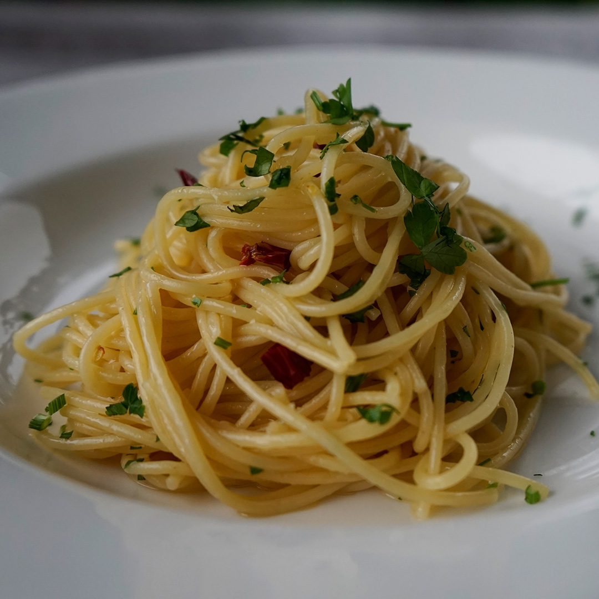

Odin Recipes
Homepage
Aglio e Olio Recipe

Description
Aglio e Olio is a traditional Italian pasta dish. It only uses garlic, parmeggiano reggiano cheese, olive oil, parsley and pepper.
Ingredients
- 250g of your preferred pasta, we recomment Linguini
- 2-3 Garlic Cloves
- 2-3 Tablespoons Olive Oil
- 100g Parmegiano Reggiano
- Freshly Ground Pepper
- Freshly Chopped Parsley
Steps
- Add the pasta to salted boiling water
- Cook the pasta for two minutes less than the time specified at the packaging
- Start cooking the garlic on a pan with your olive oil over medium-low heat
- Once the pasta is ready, kill the heat and add the pasta in the garlic pan
- Add some pasta water, the parsley, about one half of the cheese and stir for 2 minutes
- Serve on a dish and add the rest of the Parmegiano Reggiano